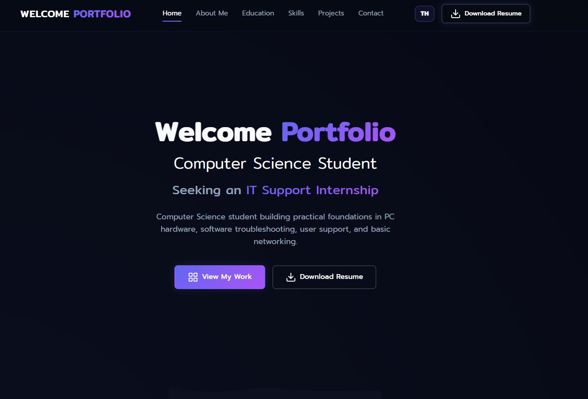

2023 — PresentBachelor's Degree
01
Rajamangala University
(Huntra)
Currently studying Computer Science with a focus on computer systems, software development, databases, networking, and web technologies.
Computer Science student building practical foundations in PC hardware, software troubleshooting, user support, and basic networking.
I am Thanawith Seajamsil, a Computer Science student with a strong passion and dedication for IT Support and System Administration.
Throughout my academic journey, I have gained solid knowledge of computer systems, hardware diagnostics, basic networking, and software installation. I frequently take responsibility for fixing computer issues for peers and during university events, helping me build practical troubleshooting skills.
I am an enthusiastic learner who is quick to adopt new tools and technologies. I possess strong interpersonal skills, patience under pressure, and a user-centric mindset. I am actively seeking an internship opportunity to apply my skills to real-world tasks and support your organization's IT department.
Bachelor's Degree in Computer Science
Current StudentIT Support
Technical Intern5 Completed
DevelopedReady to Intern
AvailableCurrently studying Computer Science with a focus on computer systems, software development, databases, networking, and web technologies.
Studied in the Japanese Language Arts program, developing foundational Japanese communication, reading, writing, and cultural understanding. The program also strengthened discipline, teamwork, adaptability, and confidence in learning new languages.
Basic technical skills developed through coursework, personal projects, and hands-on practice.
Software projects and tools related to troubleshooting, inventory, and IT service delivery.
A web application for reporting IT issues, tracking SLA repair tickets, and managing staff dashboards.
A mobile cake-ordering prototype covering sign-up, menu browsing, product details, cart management, and checkout with a friendly pastel interface.

A responsive bilingual portfolio website presenting my profile, education, technical skills, projects, resume, and contact information.
A task management application featuring clean state handling, task tracking, and an intuitive responsive UI.
A multi-page cafe website adapted from a third-party template and customized with Nomad Cafe branding, content, imagery, menus, and promotions.
For internship opportunities or project inquiries, contact me directly or send a message using the form.